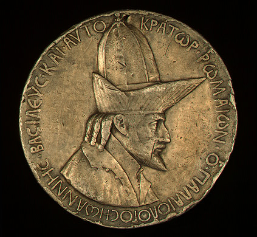

Proposition: Reunification of the Church could save the Byzantine empire
Remember: you will be called upon to answer at least one of the items listed below as part of the debate; you may (should) also take part in the counterargument section if you have things to say that differ from what your teammates have said.
For this debate, I would like to to make the arguments that were made before, after, and surrounding the Council of Florence by the Byzantines who were for or against reunification. I'm not as interested in knowing whether the council DID (or actually, DIDN'T) save the empire, but what people were arguing at the time. In other words, pretend you are a Byzantine in 1438: you are either for or against reunification.
Debate:
Team 1: argue for the Proposition
Team 2: argue against the Proposition
Assigned questions - Team 1:
1. Background - What were the major issues surrounding the schism of 1054?
2. Background - What was the Council of Lyons of 1274, what took place, and how was it received in Byzantium?
3. Background - Describe the history of the papacy from 1307-1453.
4. Presentation of the proposition: what is the topic? what is the basis of your argument?
5. Arguments - select one significant argument, and explain what it means
6. Arguments - select one significant argument, and explain what it means
7. Arguments - select one significant argument, and explain what it means
8. Do the summary, summarizing your team's arguments and state why they are preferable (you can't do this ahead of time).
Assigned questions - Team 2:
1. Background - Who was Cardinal Bessarion? Describe his life and career.
2. Background - What was the point of the Council of Florence? Who attended it from the Byzantine side?
3. Background - How was the Council of Florence received in Byzantium?
4. Presentation of the proposition: what is the topic? what is the basis of your argument?
5. Arguments - select one significant argument, and explain what it means
6. Arguments - select one significant argument, and explain what it means
7. Arguments - select one significant argument, and explain what it means
8. Do the summary, summarizing your team's arguments and state why they are preferable (you can't do this ahead of time).
Primary source evidence
A description of the Council of Florence held in 1438-45, with the decrees issued at each, can be found at https://www.ewtn.com/catholicism/library/ecumenical-council-of-florence-1438-1445-1461. You should pay attention to sessions 5-8 of 1439.
A number of texts written both about the schism of 1054, the Council of Lyons of 1274 and the Council of Florence of 1439, taken from D. J. Geanakoplos, Byzantium: Church, Society, and Civilization Seen through Contemporary Eyes (Univ. of Chicago Press, 1984), has been placed in the "Files" folder on Canvas as "florencetexts.pdf".
Information on this topic
An article by D. J. Geanakoplos, entitled "The Council of Florence (1438-1439) and the Problem of Union between the Byzantine and Latin Churches," from his book Byzantine East and Latin West: Two Worlds of Christendom in Middle Ages and Renaissance (Archon Books, 1976), has been placed in the "Files" folder on Canvas as "geanakoplos.pdf".